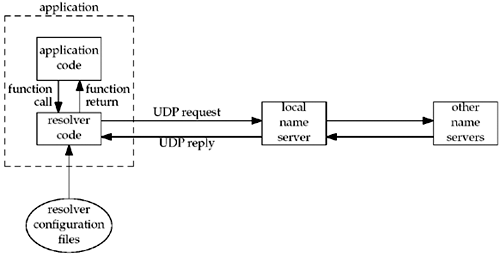

| [ Team LiB ] |
|
11.2 Domain Name System (DNS)The DNS is used primarily to map between hostnames and IP addresses. A hostname can be either a simple name, such as solaris or freebsd, or a fully qualified domain name '(FQDN), such as solaris.unpbook.com.
In this section, we will cover only the basics of the DNS that we need for network programming. Readers interested in additional details should consult Chapter 14 of TCPv1 and [Albitz and Liu 2001]. The additions required for IPv6 are in RFC 1886 [Thomson and Huitema 1995] and RFC 3152 [Bush 2001]. Resource RecordsEntries in the DNS are known as resource records (RRs). There are only a few types of RRs that we are interested in. It is too early in the deployment of IPv6 to know what conventions administrators will use for hosts that support both IPv4 and IPv6. In our example earlier in this section, we specified both an A record and a AAAA record for our host freebsd. One possibility is to place both the A record and the AAAA record under the host's normal name (as shown earlier) and create another RR whose name ends in -4 containing the A record, another RR whose name ends in -6 containing the AAAA record, and another RR whose name ends in -611 containing a AAAA record with the host's link-local address (which is sometimes handy for debugging purposes). All the records for another of our hosts are then
aix IN A 192.168.42.2
IN AAAA 3ffe:b80:1f8d:2:204:acff:fe17:bf38
IN MX 5 aix.unpbook.com.
IN MX 10 mailhost.unpbook.com.
aix-4 IN A 192.168.42.2
aix-6 IN AAAA 3ffe:b80:1f8d:2:204:acff:fe17:bf38
aix-611 IN AAAA fe80::204:acff:fe17:bf38
This gives us additional control over the protocol chosen by some applications, as we will see in the next chapter. Resolvers and Name ServersOrganizations run one or more name servers, often the program known as BIND (Berkeley Internet Name Domain). Applications such as the clients and servers that we are writing in this text contact a DNS server by calling functions in a library known as the resolver. The common resolver functions are gethostbyname and gethostbyaddr, both of which are described in this chapter. The former maps a hostname into its IPv4 addresses, and the latter does the reverse mapping. Figure 11.1 shows a typical arrangement of applications, resolvers, and name servers. We now write the application code. On some systems, the resolver code is contained in a system library and is link-edited into the application when the application is built. On others, there is a centralized resolver daemon that all applications share, and the system library code performs RPCs to this daemon. In either case, application code calls the resolver code using normal function calls, typically calling the functions gethostbyname and gethostbyaddr. Figure 11.1. Typical arrangement of clients, resolvers, and name servers. The resolver code reads its system-dependent configuration files to determine the location of the organization's name servers. (We use the plural "name servers" because most organizations run multiple name servers, even though we show only one local server in the figure. Multiple name servers are absolutely required for reliability and redundancy.) The file /etc/resolv.conf normally contains the IP addresses of the local name servers.
The resolver sends the query to the local name server using UDP. If the local name server does not know the answer, it will normally query other name servers across the Internet, also using UDP. If the answers are too large to fit in a UDP packet, the resolver will automatically switch to TCP. DNS AlternativesIt is possible to obtain name and address information without using the DNS. Common alternatives are static host files (normally the file /etc/hosts, as we describe in Figure 11.21), the Network Information System (NIS) or Lightweight Directory Access Protocol (LDAP). Unfortunately, it is implementation-dependent how an administrator configures a host to use the different types of name services. Solaris 2.x, HP-UX 10 and later, and FreeBSD 5.x and later use the file /etc/nsswitch.conf, and AIX uses the file /etc/netsvc.conf. BIND 9.2.2 supplies its own version named the Information Retrieval Service (IRS), which uses the file /etc/irs.conf. If a name server is to be used for hostname lookups, then all these systems use the file /etc/resolv.conf to specify the IP addresses of the name servers. Fortunately, these differences are normally hidden to the application programmer, so we just call the resolver functions such as gethostbyname and gethostbyaddr. |
| [ Team LiB ] |
|